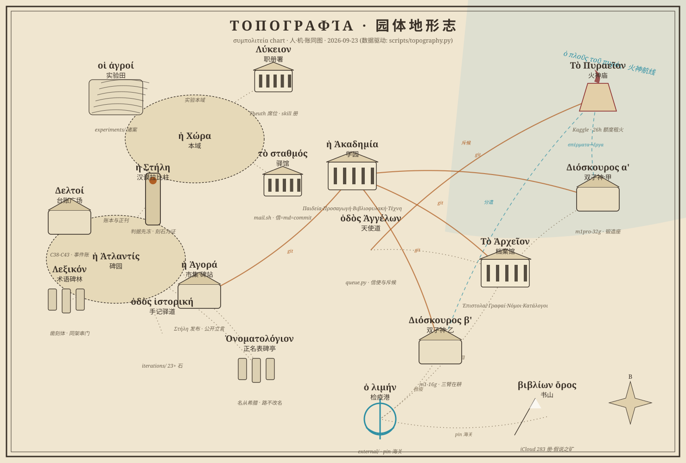
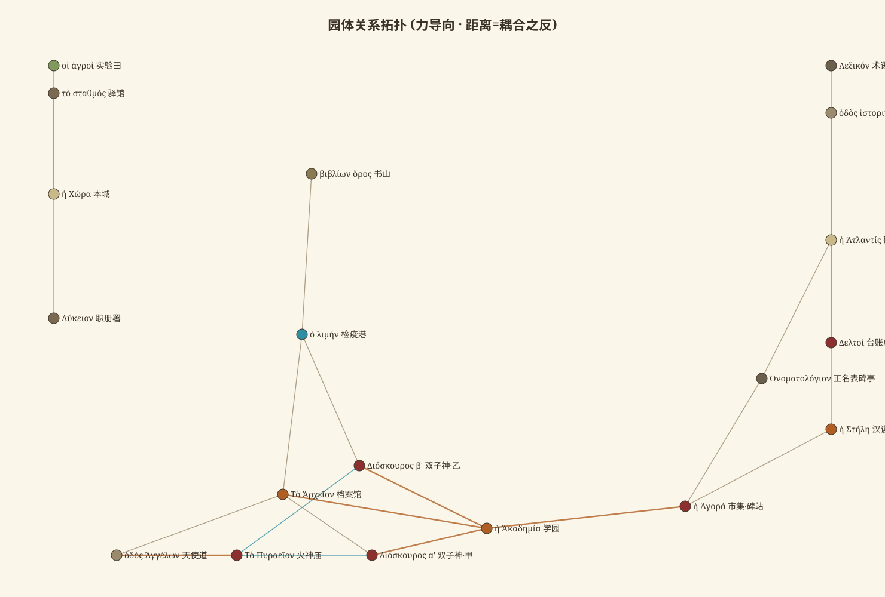

地形志 · Τοπογραφία

读图三例
- 双圈＝两大陆邦：ἡ Χώρα（本域·实验田/职册署/驿馆在其内）与 ἡ Ἀτλαντίς （碑园·台账广场/术语碑林/手记驿道）；汉谟拉比柱立于两邦之间，判据先冻，两界同法。
- 三色路：金实线＝git 大路（机构间通勤）；灰点线＝仓内小径；蓝虚线＝火神航线 （σπέρματα 出港，ἔργα 回仓 —— 种子与果实隔海对账）。
- 机构三鼎足：Ἀκαδημία（学园·育人派活炼器）· Ἀρχεῖον（档案馆·记言藏往）· Ἀγορά（市集·公开立言）；Διόσκουροι（双子神机）各耕各岛，β’ 岛三臂在耕； 检疫港收天下底本，pin 为海关；书山藏假说之矿（283 册）。
平面拓扑（第二视图 · 主人令改版：图上只留英语，希腊语退入下表；等距帧奉命撤装）
Greek names · 词汇表（图上不用，此处查）
| English (on map) | Ἑλληνικό | 汉 |
|---|---|---|
| CHORA (home base) | ἡ Χώρα | 本域 |
| ATLAS (record) | ἡ Ἀτλαντίς | 碑园 |
| ACADEMY | ἡ Ἀκαδημία | 学园 |
| ARCHIVE | Τὸ Ἀρχεῖον | 档案馆 |
| Market / Stele Site | ἡ Ἀγορά / ἡ Στήλη | 市集·石碑站 |
| Field Trials | οἱ ἀγροί | 实验田 |
| Skills Registry | Λύκειον | 职册署 |
| Post House | τὸ σταθμός | 驿馆 |
| Code of Law | ἡ Στήλη (Hammurabi) | 汉谟拉比柱 |
| Ledger / Glossary / Itinerary | Δελτοί / Λεξικόν / ὁδὸς ἱστορική | 台账·术语·手记 |
| Name Register | Ὀνοματολόγιον | 正名表 |
| Couriers Queue | ὁδὸς Ἀγγέλων | 天使道（队列） |
| Forge (Kaggle) | Τὸ Πυραεῖον | 火神庙 |
| Machine A / B | Διόσκουροι α′/β′ | 双子神机 |
| Book Mountain | βιβλίων ὄρος | 书山 |
| Quarantine Port | ὁ λιμήν | 检疫港 |
| hat: Irene/Nikos/Thea | Πρόσωπα: Εἰρήνη/Νίκος/Θέα | 三帽 |
关系拓扑（第三视图：距离＝耦合之反）

图乃活物：NODES/EDGES 即数据，政体一变，重跑
scripts/topography.py图随更新。